3.3 밴디트 알고리즘
가장 우수한 결과를 내는 기계를 믿고 선택하는 활용(Exploitation)과, 더 나은 대박 기계가 숨어있을까 봐 새로운 행동을 도전해보는 탐색(Exploration)의 적절한 조화법을 알아봅니다.
그림 03-3 마법의 입체 엡실론(ε) 주사위를 쥐고서 최적의 길(활용)과 새로운 모험(탐색) 사이에서 저울질하는 도로시와 마법 고양이 지니

마법 고양이 지니가 선물해준 마법의 엡실론(ε) 주사위를 굴리며 최적의 보상 길을 찾아가는 ε-탐욕(Epsilon-Greedy) 알고리즘의 비결을 이번 절에서 정복해 봅시다!
3.3.1 가치 추정의 원리
밴디트 문제에서 플레이어는 슬롯머신 속에 감춰진 ‘진짜 가치(보상 기댓값)’를 직접 들여다볼 수 없습니다.
• 만약 각 슬롯머신의 진짜 가치(보상 기댓값)를 안다면?
→ 플레이어는 망설임 없이 가장 좋은 슬롯머신만 계속 고르면 됩니다.
• 하지만 플레이어는 각 슬롯머신의 진짜 가치를 결코 알 수 없습니다.
• 따라서 플레이어는 직접 플레이해보며 각 슬롯머신의 가치를 '추정'해야 합니다!
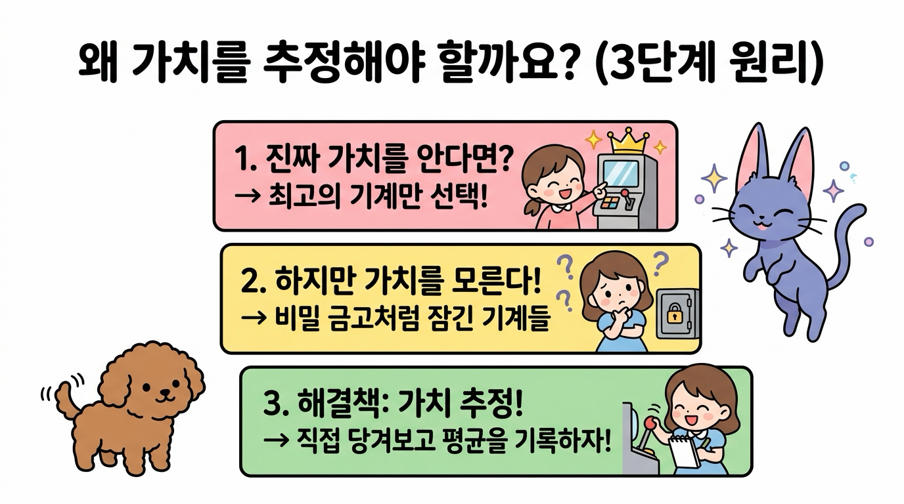
1. 왜 진짜 가치를 두고 ‘추정’할 수밖에 없을까요?
슬롯머신 앞에 선 도로시가 고개를 갸우뚱하며 수첩을 들고 고민에 빠집니다.
👧 도로시: “지니야, 슬롯머신마다 평균적으로 코인을 몇 개씩 주는지 ‘진짜 가치’를 알 수 있다면 제일 좋은 기계만 골라 당길 텐데… 기계 속이 굳게 닫혀 있어서 안 보여!”
🐱 지니: “맞아, 도로시! 슬롯머신의 내부는 튼튼한 강철 금고로 잠긴 블랙박스(Black Box)와 같단다. 우리가 눈으로 확인할 수 있는 건 레버를 당겼을 때 튀어나오는 ‘그 판의 코인 개수(일시적 보상)’뿐이지!”
우리가 진짜 가치를 직접 보지 못하고 ‘추정’할 수밖에 없는 본질적인 이유는 다음과 같습니다.
- 기계의 내부는 ‘블랙박스’입니다: 슬롯머신 안에 프로그래밍된 참된 확률과 진짜 기댓값(참 가치 q)은 비밀 금고처럼 숨겨져 있어 직접 읽어낼 수 없습니다.
- 보상은 매 판 운에 의해 요동칩니다 (확률적 노이즈): 참 가치가 1.05인 아주 우수한 슬롯머신이라도 어떤 판에는 꽝(0개)이 나오고, 참 가치가 0.95인 기계에서도 우연히 대박(10개)이 터질 수 있습니다. 단 한두 번의 결과만으로는 기계의 참모습을 결코 알 수 없습니다.
2. 플레이 횟수를 늘려야 하는 이유 (큰 수의 법칙)
그렇다면 어떻게 해야 블랙박스 속 진짜 가치를 알아낼 수 있을까요? 마법 고양이 지니가 칠판을 띄우며 명쾌하게 설명해 줍니다.
🐱 지니: “비결은 바로 통계학의 가장 위대한 마법, ‘큰 수의 법칙(Law of Large Numbers)’에 있단다! 동전을 딱 두 번 던져서 앞면이 2번 나왔다고 앞면 확률이 100%일까?”
👧 도로시: “아니지! 1,000번, 10,000번 던지다 보면 결국 50%에 가까워지잖아!”
🐱 지니: “빙고! 슬롯머신도 마찬가지야. 많이 당겨서 얻은 코인들의 평균(표본 평균)을 구하면, 일시적인 행운과 불운(노이즈)이 상쇄되면서 기계의 ‘진짜 가치’가 저절로 모습을 드러내게 된단다!”
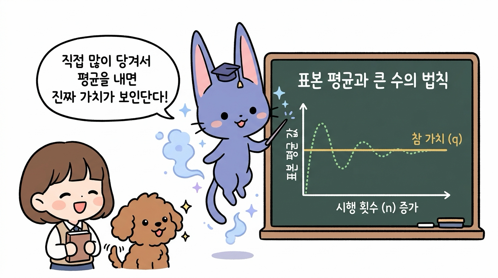
- 노이즈의 상쇄: 플레이 횟수(n)가 적을 때는 우연이라는 왜곡(노이즈)이 심하지만, 횟수를 늘릴수록 평균값은 오차 없이 기계의 참 가치(q)로 정확하게 수렴합니다.
- 표본 평균(Sample Mean): 슬롯머신을 실제로 플레이하여 얻은 보상들의 평균값을 표본 평균이라고 부르며, 이것이 곧 우리가 구하고자 하는 가치 추정치(Q)가 됩니다.
3.3.2 표본 평균 구하기와 증분 공식 유도
이제 표본 평균을 수학 공식으로 정의하고, 컴퓨터로 계산할 때 발생하는 심각한 계산량 및 메모리 한계와 이를 마법처럼 해결하는 증분 공식(Incremental Formula)의 강력한 원리를 단계별로 살펴보겠습니다.
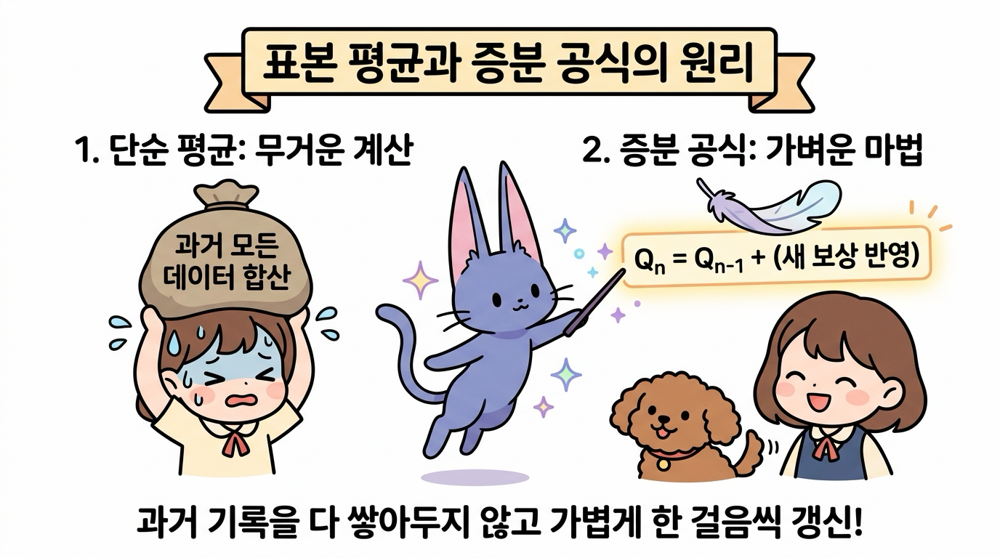
1. 단순 표본 평균의 개념과 수식, 파이썬 구현
① 단순 표본 평균의 기본 개념
슬롯머신 한 대에 집중하여 레버를 계속 당기는 상황을 상상해 봅시다. 매 판 튀어나오는 코인(R1, R2, …, Rn)들을 투명한 상자에 모아두고, 지금까지 플레이한 총 횟수(n)로 공평하게 나누어 주는 것이 바로 표본 평균(Sample Mean)입니다.
👧 도로시: “지니야, 슬롯머신을 여러 번 돌렸을 때 지금까지 얻은 보상들을 어떻게 하나로 요약해서 기계의 가치로 삼는 거야?”
🐱 지니: “간단해, 도로시! 매 판 얻은 코인들을 전부 모아 상자에 담은 뒤, 플레이한 횟수(n)만큼 똑같이 나누어 ‘한 판당 평균 코인 수’를 구하면 된단다!”
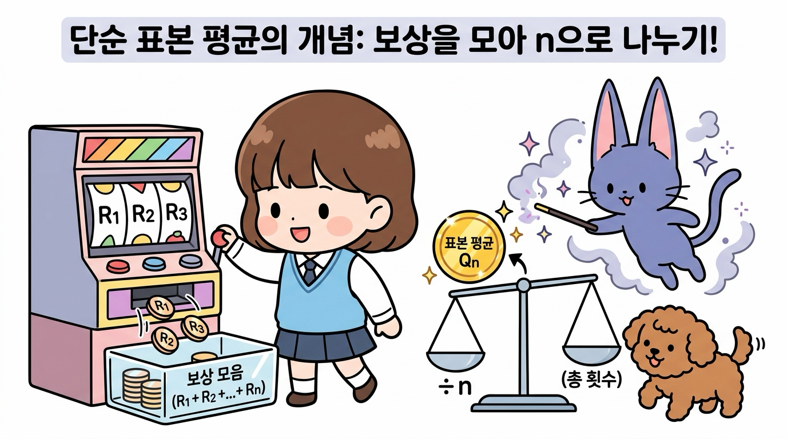
② 단순 표본 평균의 수식적 정의
어떤 하나의 슬롯머신(행동)만을 총 n번 수행했을 때, n번째 행동 가치 추정치 Qn은 다음과 같은 산술평균 공식으로 수학적으로 정의됩니다.
\(Q_n = \frac{R_1 + R_2 + \dots + R_n}{n} = \frac{1}{n} \sum_{i=1}^{n} R_i\)
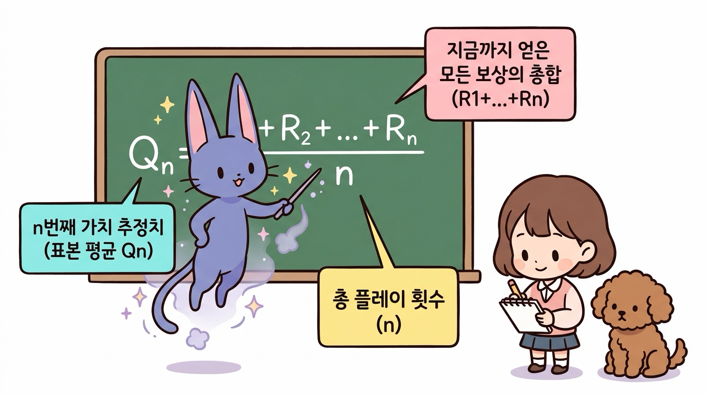
- 분자 (R1 + R2 + … + Rn): 1회부터 n회까지 플레이하며 실제로 획득한 모든 보상의 총합입니다.
- 분모 (n): 지금까지 레버를 당긴 총 플레이(시도) 횟수입니다.
- 결과 (Qn): n번의 시도를 거쳐 추정한 해당 슬롯머신의 표본 평균 가치입니다.
③ 파이썬 단순 구현 코드
[식 3.1]을 파이썬 코드로 직관적으로 구현해 보겠습니다. 10번 플레이하면서 매 판 얻은 보상을 리스트에 추가하고, 내장 함수 sum()을 이용해 표본 평균을 계산합니다.
import numpy as np
np.random.seed(0) # 일관된 실험 결과를 위한 난수 시드 고정
rewards = [] # 과거 보상들을 저장할 리스트
for n in range(1, 11): # 1부터 10까지 10번 플레이
reward = np.random.rand() # 0.0 이상 1.0 미만의 무작위 보상 발생 (시뮬레이션)
rewards.append(reward) # 새 보상을 리스트의 맨 뒤에 추가
Q = sum(rewards) / n # [식 3.1] 모든 보상의 합을 현재 판수 n으로 나눔
print(f"판수 {n:2d}: 최신 보상 = {reward:.4f} → 표본 평균 Q = {Q:.4f}")
실행 결과
판수 1: 최신 보상 = 0.5488 → 표본 평균 Q = 0.5488
판수 2: 최신 보상 = 0.7152 → 표본 평균 Q = 0.6320
판수 3: 최신 보상 = 0.6028 → 표본 평균 Q = 0.6223
판수 4: 최신 보상 = 0.5449 → 표본 평균 Q = 0.6029
판수 5: 최신 보상 = 0.4237 → 표본 평균 Q = 0.5671
...
판수 10: 최신 보상 = 0.3834 → 표본 평균 Q = 0.6158
④ 파이썬 코드 실행 흐름 다이어그램
위 파이썬 루프가 매 판 어떻게 실행되는지 시각적인 흐름도로 살펴보겠습니다.
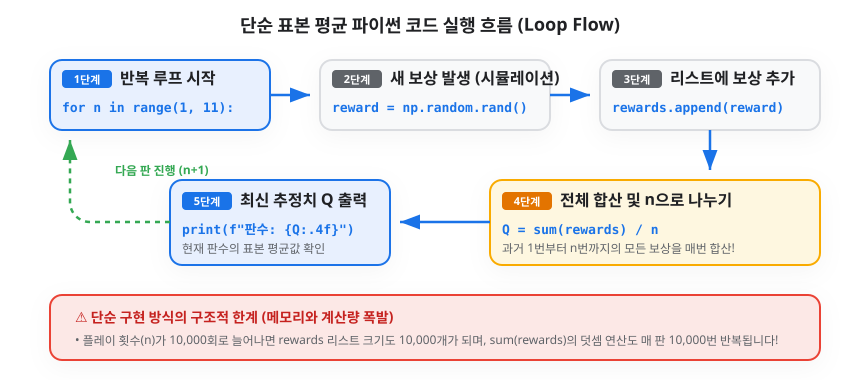
2. 단순 구현의 한계: 메모리와 계산량의 폭발
하지만 이 단순한 방식에는 심각한 문제가 숨어 있습니다. 도로시가 끝없이 쌓인 수첩을 보며 진땀을 흘립니다.
👧 도로시: “으악, 지니야! 10,000판을 돌리면 10,000개의 코인 기록을 수첩에 다 적어두고, 매 판마다 10,000개를 처음부터 끝까지 다 더해야 해? 수첩도 모자라고 계산하다가 머리가 터질 것 같아!”
🐶 토토: “낑낑! (계산기에서 연기가 나요!)”
- 메모리 낭비: 플레이 횟수(n)가 늘어날수록 과거의 모든 보상을 저장하기 위한 메모리가 끝없이 증가합니다 (O(n) 공간 복잡도).
- 계산량 폭발: 매 판마다
sum(rewards)로 n개의 숫자를 처음부터 다시 더해야 하므로, 총 계산량이 O(n2)으로 폭증하여 속도가 급격히 느려집니다.
3. 지니의 마법 해결책: 증분 공식(Incremental Formula) 유도
지니가 마법 지팡이를 휘두르며 도로시를 안심시킵니다.
🐱 지니: “걱정 마, 도로시! 과거의 10,000개 기록을 전부 기억할 필요가 전혀 없단다. ‘직전 판까지의 평균(Qn-1)’과 ‘방금 새로 얻은 보상(Rn)’ 딱 2개만 있으면 새로운 평균(Qn)을 순식간에 계산할 수 있는 마법의 공식이 있거든!”
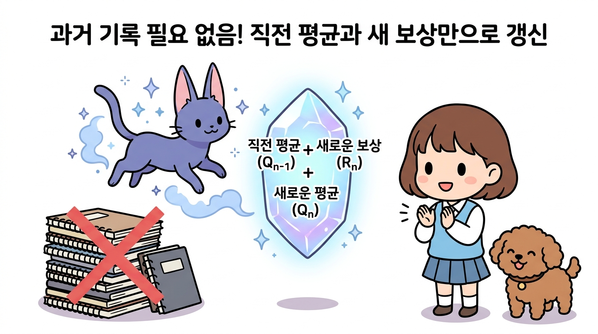
수식이 유도되는 과정을 3단계로 차근차근 살펴보겠습니다.
1단계: 직전 평균 Qn-1에서 과거 보상 총합 유도하기
n - 1번째 시점까지의 표본 평균 정의는 다음과 같습니다.
\[Q_{n-1} = \frac{R_1 + R_2 + \dots + R_{n-1}}{n-1}\]양변에 (n - 1)을 곱하면, 과거에 얻었던 1번째부터 n - 1번째까지의 모든 보상 총합을 ‘직전 평균’ 하나로 묶어낼 수 있습니다.
\(R_1 + R_2 + \dots + R_{n-1} = (n-1)Q_{n-1}\)
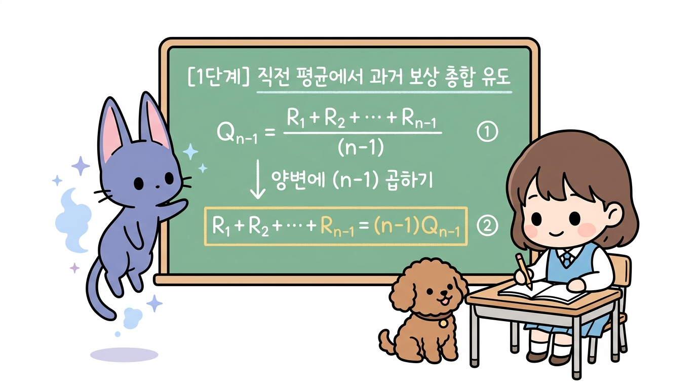
2단계: Qn 식에 대입하여 두 부분으로 분해하기
n번째 표본 평균 식에서 과거 보상들의 합 부분을 방금 구한 [식 3.2]로 쏙 바꿔 대입합니다.
\[Q_n = \frac{R_1 + \dots + R_{n-1} + R_n}{n}\]\(= \frac{(n-1)Q_{n-1} + R_n}{n}\)
이제 분수를 ‘과거 평균 덩어리’와 ‘새 보상 덩어리’ 둘로 분해해 줍니다.
\[= \frac{n-1}{n}Q_{n-1} + \frac{1}{n}R_n\]\(= \left(1 - \frac{1}{n}\right)Q_{n-1} + \frac{1}{n}R_n\)
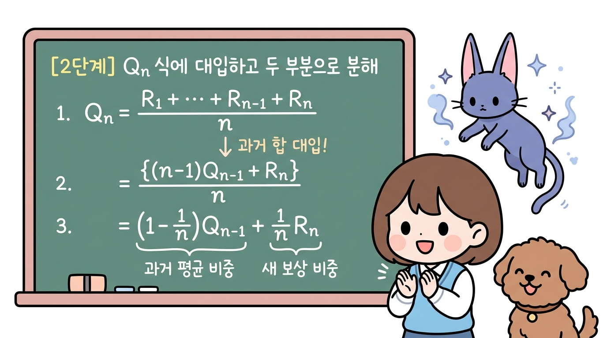
3단계: 최종 증분 공식 완성 (오차와 갱신 구조)
[식 3.4]의 괄호를 풀고 Qn-1을 기준으로 예쁘게 묶어주면 기적처럼 아름다운 공식이 완성됩니다!
\[Q_n = Q_{n-1} - \frac{1}{n}Q_{n-1} + \frac{1}{n}R_n\]\(Q_n = Q_{n-1} + \frac{1}{n}(R_n - Q_{n-1})\)
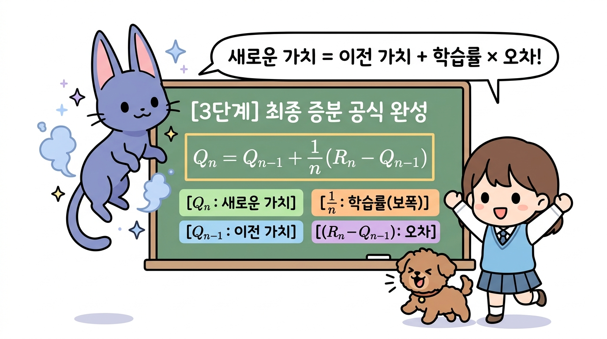
4. 증분 공식의 구조와 기하학적 의미
수식을 가만히 관찰하던 도로시의 눈이 번쩍 뜨입니다.
👧 도로시: “지니야! 수식을 가만히 뜯어보니까, 내가 지금 서 있는 자리(Qn-1)에서 방금 들어온 새로운 보상(Rn)이라는 목적지를 향해 한 걸음 걸어가는 느낌이야!”
🐱 지니: “정확해, 도로시! 바로 그게 증분 공식에 담긴 놀라운 ‘기하학적 의미(Geometric Meaning)’란다! 이 수식은 단순한 평균 계산법을 넘어, 앞으로 우리가 배울 모든 강화 학습 알고리즘(TD 학습, Q-러닝 등)을 관통하는 만능 갱신 뼈대란다!”
🐶 토토: “멍멍! (목표 사과를 향해 꼬리를 흔들며 발걸음을 옮겨요!)”
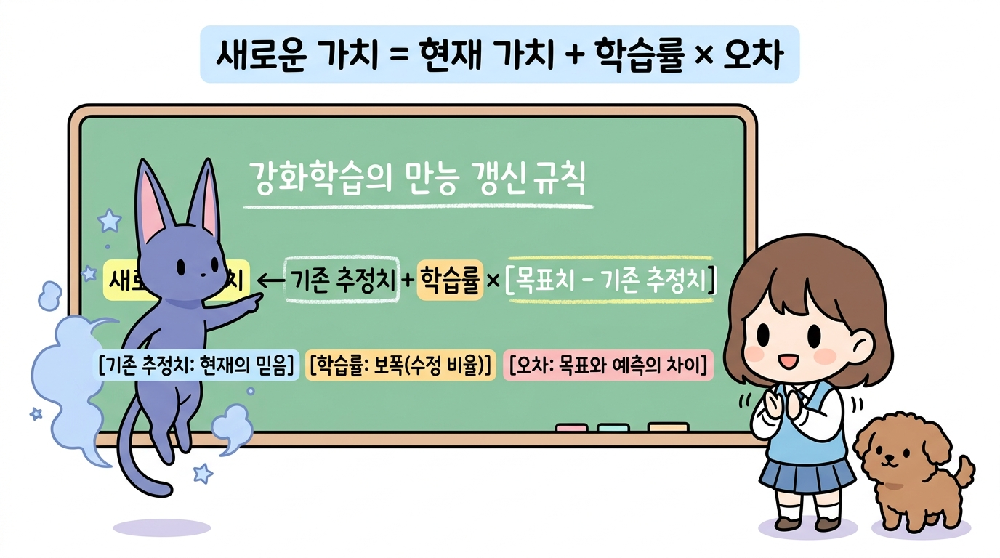
① 강화 학습의 만능 갱신 뼈대 (Universal Update Rule)
증분 공식 [식 3.5]를 일반적인 언어로 풀어서 쓰면 다음과 같은 형태가 됩니다.
\(\text{새로운 추정치} \leftarrow \text{기존 추정치} + \text{학습률} \times \left[ \text{목표치} - \text{기존 추정치} \right]\)
이 식을 구성하는 세 가지 핵심 요소는 다음과 같습니다:
- 기존 추정치 (Qn-1):
- 에이전트가 지금까지의 경험을 바탕으로 믿고 있던 현재의 기준 가치(출발점)입니다.
- 오차 (Error, Rn - Qn-1):
- “실제로 들어온 목표치(Rn)”와 “내가 기대했던 기존 추정치(Qn-1)” 사이의 예측 빗나감(오차)입니다.
- 앞으로 가치를 수정해야 할 ‘방향’과 ‘거리’를 가리킵니다.
- 실제 보상이 더 좋을 때 (Rn > Qn-1): 양(+)의 오차가 발생하여 가치를 위로 올려줍니다.
- 실제 보상이 더 나쁠 때 (Rn < Qn-1): 음(-)의 오차가 발생하여 가치를 아래로 깎아내립니다.
- 학습률 (Learning Rate / Step-size, 1/n):
- 발생한 오차를 새로운 가치에 얼마만큼의 비율로 반영할 것인지를 정하는 보폭(Step-size)입니다.
② 수직선 상의 이동: 기하학적 의미
증분 공식을 수직선 상의 이동으로 바라보면 훨씬 더 직관적으로 이해할 수 있습니다.
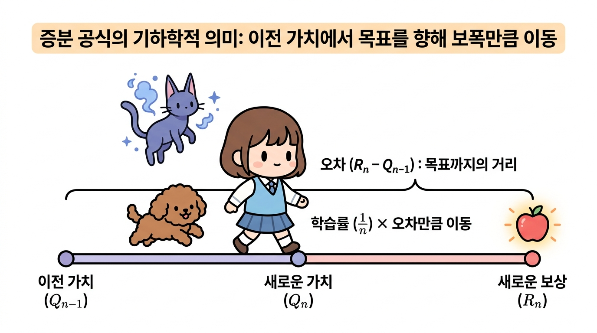
- 출발점: 현재 나의 믿음인 이전 가치 Qn-1에 서 있습니다.
- 목표점: 방금 실제로 관측된 새로운 보상 Rn이 목표 지점입니다.
- 이동 거리: 둘 사이의 간격인 오차 (Rn - Qn-1)만큼 떨어져 있습니다.
- 한 걸음 전진: 목표 지점까지 한 번에 순간이동하지 않고, 학습률 1/n의 비율만큼 보폭을 내딛어 새로운 가치 Qn에 도달합니다.
💡 보폭(학습률 1/n)이 자동으로 조절되는 원리
- 초반 (n이 작을 때, 예: n = 2): 학습률 1/n = 50%로 매우 큽니다. 아직 경험이 적으므로 새로운 보상을 성큼성큼 큰 걸음으로 적극 수용합니다.
- 후반 (n이 클 때, 예: n = 100): 학습률 1/n = 1%로 매우 작아집니다. 이미 100번의 충분한 경험이 쌓였으므로, 한두 번의 운이나 노이즈에 휘둘리지 않고 아주 미세하게 징검다리를 건너듯 진짜 참 가치(q)로 안정적으로 수렴합니다.
5. 파이썬 증분 구현 코드
도로시가 과거의 무거운 수첩을 내려놓고 가벼운 미소를 짓습니다.
👧 도로시: “지니야! 과거 10,000개 기록을 저장하던
rewards리스트를 싹 버리고, 오직Q변수 딱 하나만 사용해서 코드를 작성해 볼게!”🐱 지니: “완벽해, 도로시! 매 판마다 리스트를 처음부터 다시 더하는
sum()함수도 전혀 필요 없단다. 증분 공식Q += (reward - Q) / n단 한 줄이면 번개처럼 빠른 속도로 평균이 갱신된단다!”
① 파이썬 증분 구현 코드
[식 3.5]를 적용하여 과거 보상 리스트 없이 단일 변수 Q만으로 구현한 파이썬 코드입니다.
import numpy as np
np.random.seed(0) # 이전 단순 구현과 완벽한 비교를 위해 동일한 시드 설정
Q = 0.0 # 과거 보상 리스트 없이, 단 하나의 가치 추정치 변수만 초기화
for n in range(1, 11): # 1부터 10까지 10번 플레이
reward = np.random.rand() # 슬롯머신 레버를 당겨 얻은 새 보상 (R_n)
# [식 3.5] 증분 공식 적용: Q_n = Q_{n-1} + (R_n - Q_{n-1}) / n
Q += (reward - Q) / n
print(f"판수 {n:2d}: 최신 보상 = {reward:.4f} → 증분 갱신된 가치 Q = {Q:.4f}")
실행 결과
판수 1: 최신 보상 = 0.5488 → 증분 갱신된 가치 Q = 0.5488
판수 2: 최신 보상 = 0.7152 → 증분 갱신된 가치 Q = 0.6320
판수 3: 최신 보상 = 0.6028 → 증분 갱신된 가치 Q = 0.6223
판수 4: 최신 보상 = 0.5449 → 증분 갱신된 가치 Q = 0.6029
판수 5: 최신 보상 = 0.4237 → 증분 갱신된 가치 Q = 0.5671
판수 6: 최신 보상 = 0.6459 → 증분 갱신된 가치 Q = 0.5802
판수 7: 최신 보상 = 0.4376 → 증분 갱신된 가치 Q = 0.5598
판수 8: 최신 보상 = 0.8918 → 증분 갱신된 가치 Q = 0.6013
판수 9: 최신 보상 = 0.9637 → 증분 갱신된 가치 Q = 0.6416
판수 10: 최신 보상 = 0.3834 → 증분 갱신된 가치 Q = 0.6158
✨ 결과 비교: 앞서 작성했던 단순 구현 코드의 결과와 단 0.0001의 오차도 없이 100% 동일한 값을 출력합니다! 수학적으로 완전히 같은 산술평균을 구하면서도, 컴퓨터 자원은 기적처럼 가볍게 사용합니다.
② 증분 구현 파이썬 코드의 실행 흐름
컴퓨터 메모리 내부에서 단 하나의 변수 Q가 어떻게 즉시 갱신되며 루프를 순환하는지 단계별 흐름도를 확인해 봅시다.
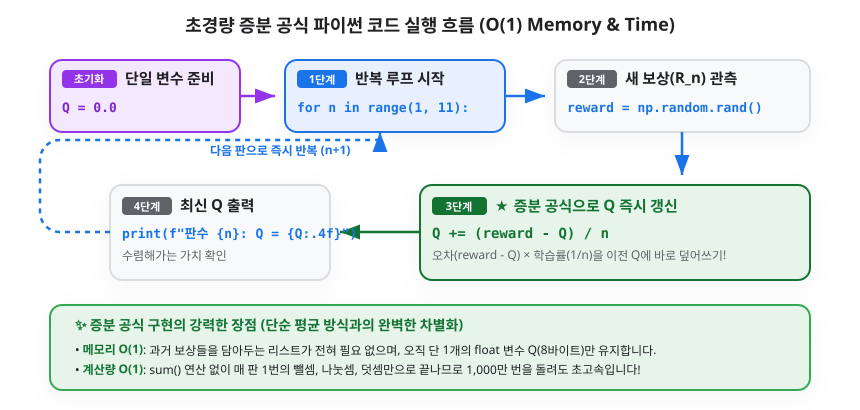
③ 코드 핵심 연산 분해 및 복잡도 혁신
Q += (reward - Q) / n의 작동 원리:- 우변의
Q: 직전 판까지의 가치 추정치인 Qn-1을 의미합니다. (reward - Q): 방금 얻은 실제 보상과 예상치의 차이인 오차(Error)입니다./ n: 오차에 현재 판수의 학습률 1/n을 곱해줍니다.+=연산: 계산된 미세 수정값을 기존Q에 즉시 누적 덮어써서 새로운 추정치 Qn을 완성합니다.
- 우변의
| 비교 항목 | ① 단순 표본 평균 구현 (sum) |
② 증분 공식 구현 (Q +=) |
개선 효과 |
|---|---|---|---|
| 필요 메모리 (공간 복잡도) | O(n) (과거 모든 보상 리스트 저장) | 단 O(1) (단 1개의 float 변수 Q) |
무한대 플레이 가능 (메모리 절약 99.9%) |
| 계산량 (시간 복잡도) | 매 판 O(n) 덧셈 $\rightarrow$ 총 O(n2) | 매 판 단 1회의 연산 O(1) | 1,000만 판을 돌려도 속도 저하 제로 |
3.3.3 에이전트의 행동 정책과 딜레마
가치를 추정하는 효율적인 방법을 알았으니, 이제 플레이어(도로시)가 여러 대의 슬롯머신 중에서 “어떤 기계를 선택하여 레버를 당길 것인가?”라는 의사결정 전략(정책)을 세워야 합니다.
1. 탐욕 정책(Greedy Policy)과 그 함정
도로시가 기발한 아이디어가 떠올랐다는 듯 외칩니다.
👧 도로시: “지니야! 지금까지 플레이해 본 결과 중에서 평균 점수(Q)가 가장 높은 최고의 슬롯머신 하나만 골라서 계속 당기면 무조건 대박이겠지? 이걸 탐욕 정책(Greedy Policy)이라고 부르자!”
🐱 지니: “잠깐, 도로시! 멈춰! 탐욕 정책에는 아주 무서운 함정이 도사리고 있단다!”
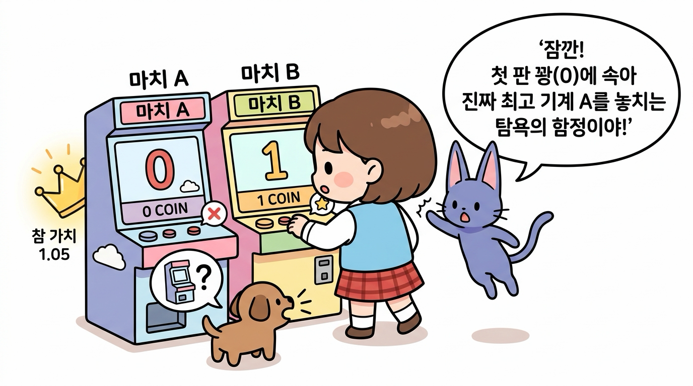
⚠️ 탐욕 정책의 치명적인 함정 (조기 수렴의 오류)
- 상황을 가정해 봅시다:
- 슬롯머신 A: 진짜 참 가치가 1.05인 최고의 기계 (하지만 꽝 확률 70%)
- 슬롯머신 B: 진짜 참 가치가 0.95인 평범한 기계 (하지만 당첨률 50%)
- 도로시가 두 기계를 딱 한 번씩 시험 삼아 당겨보았습니다:
- 슬롯머신 A를 당겼더니 하필 첫 판에 꽝이 나와 0점을 얻었습니다 (Q(A) = 0).
- 슬롯머신 B를 당겼더니 운 좋게 1점을 얻었습니다 (Q(B) = 1).
- 탐욕 정책의 비극:
- 탐욕 정책은 현재 추정치만 보고 Q(B) > Q(A)이므로 이후 영원히 슬롯머신 B만 선택합니다.
- 사실은 슬롯머신 A가 훨씬 더 좋은 기계인데도, 단 한 번의 불운 때문에 A를 영원히 외면하게 되는 ‘성급한 확신(조기 수렴)의 함정’에 빠지게 됩니다!
2. 활용(Exploitation)과 탐색(Exploration)의 딜레마
초기의 불완전한 추정치만 믿고 탐욕스럽게 행동하면 진짜 최고의 보물을 영원히 놓칠 수 있습니다. 따라서 에이전트에게는 두 가지 상반된 행동이 필요합니다.
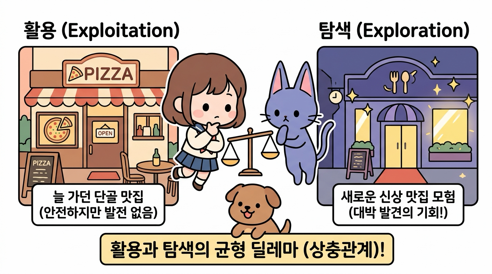
- 활용 (Exploitation):
- 지금까지의 경험상 가장 좋았던 기계를 믿고 선택하는 행동입니다. (현재의 이익 극대화)
- 비유: 늘 가던 익숙하고 맛있는 단골 맛집에 방문하기.
- 탐색 (Exploration):
- 가치 추정치의 정확도를 높이기 위해, 다른 기계들을 호기심을 갖고 시도해보는 행동입니다. (미래의 잠재력 발굴)
- 비유: 아직 가보지 않은 완전히 새로운 신상 맛집에 모험해 보기.
⚖️ 활용-탐색의 상충관계(Trade-off)
- 활용만 하면? → 새로운 대박 기회를 평생 발견하지 못합니다.
- 탐색만 하면? → 꽝이 많은 나쁜 기계들을 계속 당기느라 코인을 낭비합니다.
- 강화 학습의 핵심 과제: “언제 익숙한 것을 활용하고, 언제 새로운 것을 탐색할 것인가?”
3. 지니의 마법 주사위: ε-탐욕(Epsilon-Greedy) 정책
이 어려운 딜레마를 가장 우아하고 단순하게 해결하기 위해, 지니가 도로시에게 마법의 주사위를 건넵니다.
🐱 지니: “도로시, 이 딜레마를 해결하기 위해 지니가 마법의 엡실론(ε) 주사위를 선물할게! 평소 90%의 확률로는 지금까지 제일 좋았던 기계를 당기고(활용), 가끔 10%(ε = 0.1)의 확률로는 호기심을 발휘해 다른 기계들을 골고루 둘러보는(탐색) 거야!”
👧 도로시: “와! 90%는 안전하게 코인을 벌면서도, 10%의 모험으로 진짜 숨은 보물 기계를 찾아낼 수 있겠구나!”
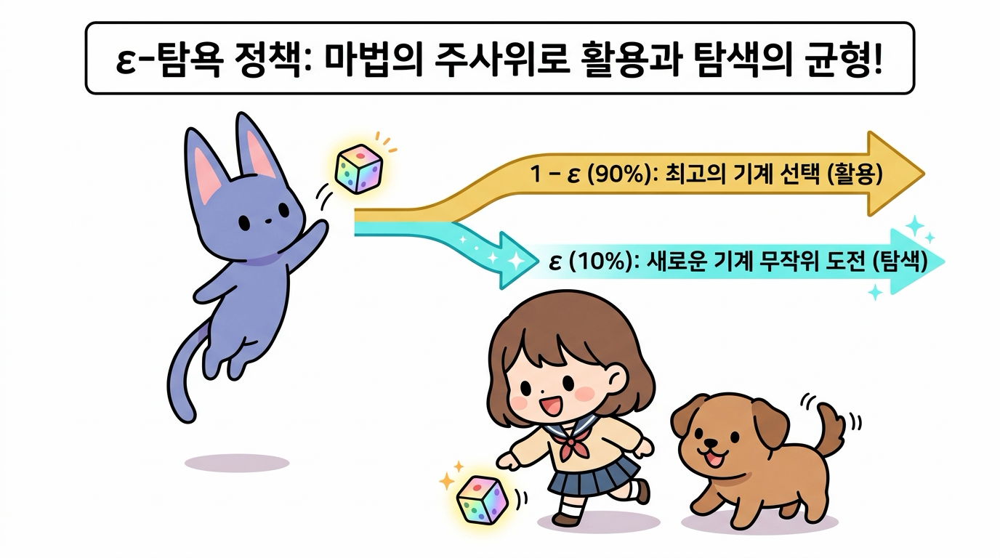
ε-탐욕 정책의 작동 규칙 (ε = 0.1인 경우)
- 1 - ε의 확률 (90%) → 활용(Exploitation):
- 지금까지 추정된 가치 Q가 가장 높은 최고의 슬롯머신을 선택합니다.
- ε의 확률 (10%) → 탐색(Exploration):
- 모든 슬롯머신 중 하나를 무작위(Random)로 선택하여 새로운 경험을 쌓습니다.
이렇게 하면 대부분의 상황에서는 최고의 기계로 안전하게 코인을 쓸어 담으면서도, 가끔씩 이루어지는 탐색 덕분에 첫 판에 꽝이 났던 진짜 최고 기계(A)의 진가를 끝내 발견해 낼 수 있습니다.
3.3.4 오늘 공부한 핵심 요약
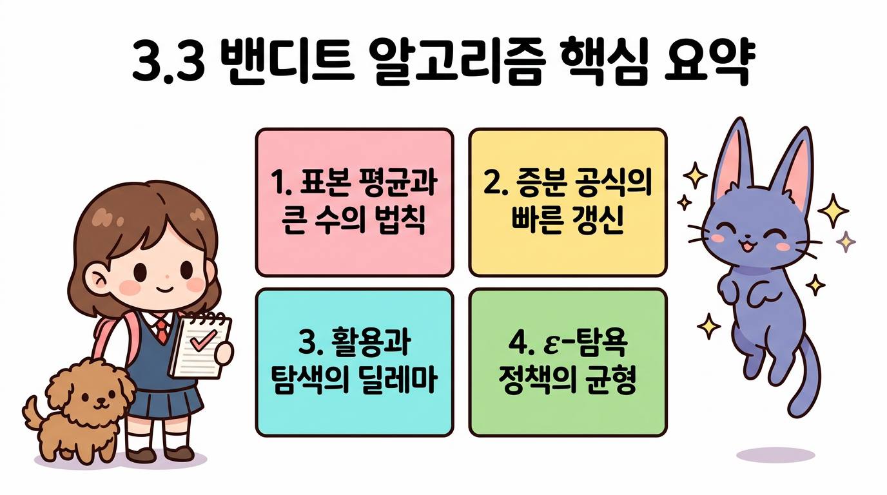
- 표본 평균과 큰 수의 법칙: 슬롯머신의 내부 가치는 볼 수 없는 블랙박스이지만, 플레이 횟수(n)를 늘려 표본 평균을 구하면 참 가치(q)로 정확히 수렴합니다.
- 증분 공식의 가벼운 갱신: 과거의 모든 데이터를 저장할 필요 없이, 직전 평균 Qn-1과 새 보상 Rn만으로 Qn = Qn-1 + 1/n(Rn - Qn-1)을 통해 초경량으로 가치를 갱신합니다.
- 활용과 탐색의 딜레마: 눈앞의 최고만 쫓는 탐욕 정책은 조기 수렴의 함정에 빠지므로, 안전한 ‘활용’과 호기심 어린 ‘탐색’ 사이의 조화가 필수적입니다.
- ε-탐욕 정책의 황금 균형: 1 - ε의 확률로 활용하고 ε의 확률로 탐색하여, 안정적인 수익과 새로운 대박 발견이라는 두 마리 토끼를 모두 잡는 표준 알고리즘입니다.